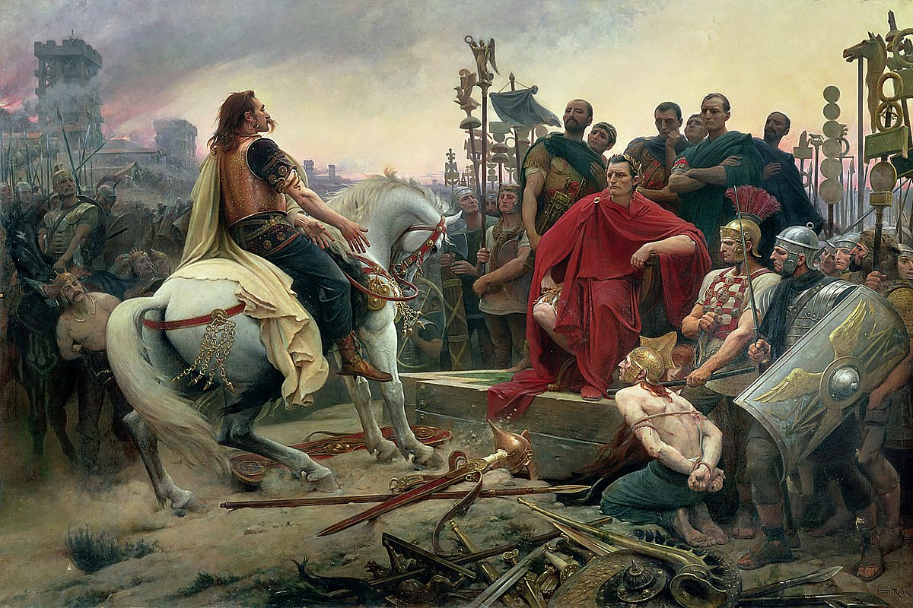
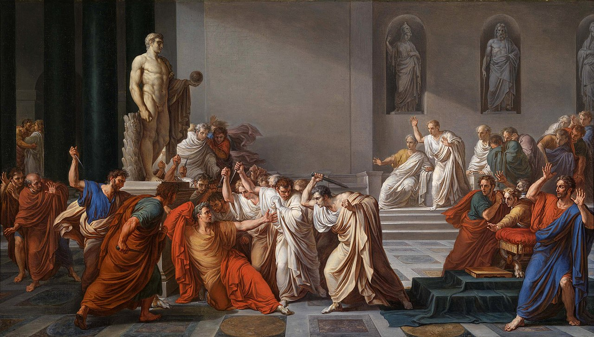

Julio César
Dictador de Roma, general militar y reformador.
Julio César, nacido el 12 de julio en el año 100 a.C. y asesinado en el 44 a.C., fue un líder militar y político clave en la transición de la República Romana al Imperio Romano. Su ambición, habilidades tácticas y reformas políticas tuvieron un impacto duradero en la historia de Roma.
Aprende más sobre Julio CésarAquí hay una cronología del imperio de Julio César:
- 100 a.C. - Nacimiento de Julio César en Roma, en una familia patricia de ascendencia noble.
- 100 a.C. - 70 a.C - Juventud y Formación (100 a.C. - 70 a.C.): Julio César nació en el seno de una familia patricia, la gens Julia, en el año 100 a.C. Desde joven, mostró un carácter ambicioso y una gran capacidad para la oratoria y la política. Su tío, Cayo Mario, un influyente líder militar, tuvo un impacto significativo en su formación. César recibió una educación clásica, destacándose en la retórica y el derecho, lo que le permitió construir una base sólida para su futura carrera política. A los 16 años, tras la muerte de su padre, César asumió el papel de cabeza de familia y se casó con Cornelia, la hija de un aliado de Mario. Durante su juventud, también sirvió como sacerdote de Júpiter, pero su carrera sacerdotal fue interrumpida cuando fue forzado a huir de Roma debido a la persecución del dictador Sila, enemigo de su familia.
- 60 a.C. - 53 a.C. - Primer Triunvirato. En el 60 a.C., César formó una alianza política informal conocida como el Primer Triunvirato con Pompeyo y Craso, dos de los hombres más poderosos de Roma. Este acuerdo permitió a César ser elegido cónsul en el 59 a.C. y le otorgó el control de las provincias de Galia y la Iliria durante cinco años.
- 58-50 a.C. - Guerra de las Galias: Desde el 58 a.C. hasta el 50 a.C., Julio César lideró una serie de campañas militares en las Galias (actual Francia y Bélgica), que resultaron en la conquista completa de la región. Su victoria más famosa fue la batalla de Alesia en el 52 a.C., donde derrotó a Vercingétorix, líder de los galos. 
- 49-46 a.C. - Al regresar de la Galia, César se encontró en una posición de poder que amenazaba a sus antiguos aliados. En 49 a.C., desobedeció órdenes directas y cruzó el río Rubicón con su ejército, un acto que inició una guerra civil contra Pompeyo y sus seguidores. Este conflicto, que incluyó batallas clave como la de Farsalia en 48 a.C., culminó con la victoria de César y la consolidación de su poder. En 45 a.C., se proclamó dictador perpetuo, marcando el fin de la República y allanando el camino hacia el Imperio Romano..
- 46 a.C. - En el año 46 a.C., tras su victoria en la guerra civil, Julio César fue nombrado dictador con un mandato de 10 años, otorgándole un poder extraordinario sobre Roma. Sin embargo, en el 44 a.C., este mandato fue ampliado y se le concedió el título de "Dictador Perpetuo," dándole control total e ilimitado sobre el gobierno romano. Este poder absoluto le permitió implementar reformas fundamentales que transformarían la República en lo que eventualmente se convertiría en el Imperio Romano.
- 44 a.C. (55 años) -La muerte de Julio César ocurrió el 15 de marzo del 44 a.C., una fecha conocida como los Idus de marzo. Fue asesinado por un grupo de senadores romanos en un complot dirigido por Casio Longino, Bruto y otros conspiradores que temían que César estuviera acumulando demasiado poder y que su ambición amenazara la República Romana. César fue atacado mientras asistía a una reunión del Senado en el Teatro de Pompeyo. Según las fuentes históricas, los conspiradores, que sumaban alrededor de 60, lo rodearon y lo apuñalaron. Se dice que recibió 23 puñaladas, y entre sus asesinos estaba Marco Junio Bruto, quien, se cree, era un hijo adoptivo de César y al que César había favorecido. La traición fue particularmente impactante porque se pensaba que Bruto, por su cercanía a César, no participaría en un acto tan violento. La muerte de César desencadenó una serie de eventos que llevaron a más conflicto civil y al eventual colapso de la República Romana, abriendo el camino para el ascenso del Imperio Romano bajo su heredero adoptivo, Octavio (posteriormente conocido como Augusto). 
"La suerte está echada."
-- Julio César